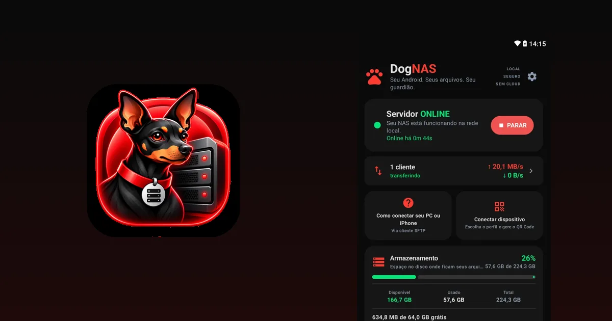

Como transformar um Android antigo em servidor de arquivos

Quase todo mundo tem um celular ou tablet Android guardado na gaveta. Ele ainda liga, conecta no Wi-Fi e tem espaço de sobra. Em vez de deixá-lo parado, você pode transformá-lo em um pequeno servidor de arquivos para a sua casa: um lugar para guardar e acessar fotos, vídeos e documentos pela rede, sem nuvem e sem mensalidade.
Este guia mostra o caminho completo com o DogNAS, um app gratuito que faz o aparelho funcionar como servidor de arquivos na rede Wi-Fi local.


O que você precisa
- Um celular ou tablet com Android 7.0 ou mais recente, que vai ficar em casa como servidor.
- O Wi-Fi da sua casa. Servidor e aparelhos que vão acessar os arquivos precisam estar na mesma rede.
- Espaço para os arquivos: a memória interna do aparelho, um cartão SD ou um HD/pendrive USB (discos USB exigem um aparelho com USB OTG).
- Um carregador, porque o servidor funciona melhor ligado na tomada.
Passo a passo
- Instale o DogNAS no Android antigo. É ele que vai guardar os arquivos. O app está na Google Play.
- Escolha onde guardar os arquivos e toque em Iniciar. O servidor passa a funcionar na rede da casa.
- Crie um perfil para cada pessoa. Cada perfil tem seu PIN e suas pastas, e ninguém vê os arquivos dos outros.
- Conecte o seu celular. No servidor, gere o QR Code do perfil. No celular que vai usar os arquivos, abra o DogNAS Client Lite, aponte a câmera para o QR Code e digite o PIN.
- Use no dia a dia. Navegue pelas pastas, envie fotos e vídeos e baixe o que precisar pelo Wi-Fi de casa.
Para acessar do computador, você não precisa de um app especial: o DogNAS fala SFTP, então programas como FileZilla, WinSCP, Cyberduck e o sftp do OpenSSH funcionam.
Acompanhe tudo, sem complicação
O servidor mostra, em tempo real, os clientes conectados e a velocidade das transferências. No celular, o Client Lite mantém a fila de envios e downloads, e você reaproveita o aparelho antigo em poucos minutos.
Quanto espaço você tem
No plano Grátis, o DogNAS gerencia até 64 GB, com o perfil Casa e mais 2 perfis, e até 3 dispositivos pareados. O DogNAS Pro é uma compra única, sem assinatura, e libera todo o armazenamento do aparelho. Se precisar de mais espaço, ligue um cartão SD ou um disco USB.
O que considerar antes de começar
- Depende do aparelho. Alguns fabricantes limitam apps em segundo plano para economizar bateria. Se o servidor parar sozinho, veja as configurações de bateria do aparelho e os requisitos de compatibilidade.
- Um disco pode falhar. O DogNAS guarda os arquivos no armazenamento que você escolheu e não cria cópias de segurança por conta própria. Para arquivos importantes, mantenha uma cópia independente.
- Vários discos não viram um só. Cada disco é um armazenamento separado; o DogNAS não junta vários discos num único volume.
- Rede local. O acesso depende da configuração da sua rede e das credenciais do DogNAS. Os arquivos trafegam cifrados (SSH/SFTP) pela sua rede, sem passar por nuvem.
Veja como é simples
Capturas de tela reais do app: o servidor ligado, o QR Code do perfil e os arquivos no celular.


Próximo passo
Separe o Android antigo, instale o servidor e conecte o seu celular. Em poucos minutos, a gaveta vira o armazenamento da casa.